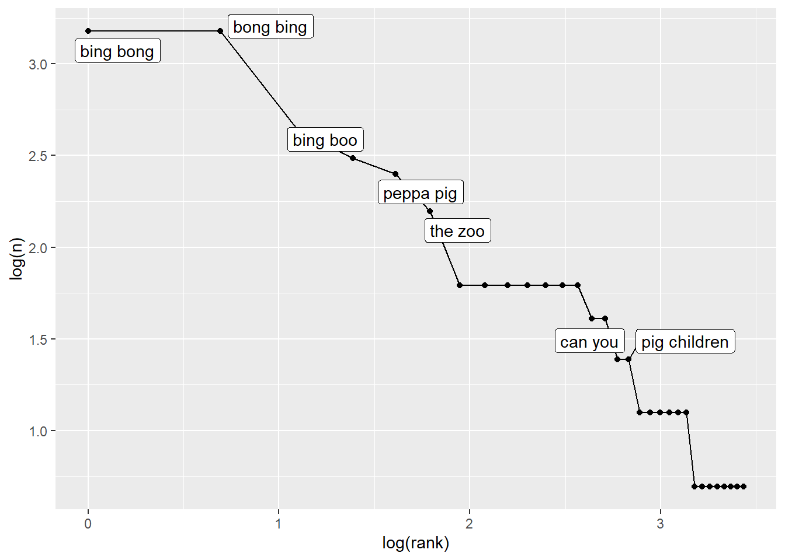

Recent we Jewish Speaker to History Congress
towards of of work our as Tonight civil President
we on Thank well Members , you done rights
targeting are policies conclusion , of reminded
be be First Lady the , and City Mr , Kansas
Black . of : we Jewish , , and as of week's mark
Month last . of the America much us shooting in
Nation's the that divided still centers Mr nation
and path that . . United our the remains vandalism
cemeteries may remind Vice of while celebration a
threats , citizens community States as very ,Preprocessing
In this section we will look at preprocessing of text, i.e. how we can go from text to numbers and what choices/assumptions we want to make along the way. We will review the most basic assumption we make in quantitative analysis of large text data: bag of words.
It is very important to remember that all texts are unique! It does not take a large amount of words before one text begins to differ from another, even if the theme, form, aim and meaning are identical. Even if the same author was to write about exactly the same thing at two different times, the two texts would very likely differ. Therefore, we often take steps to reduce or standardize the number of elements in our texts, before we do analyses. This is what we understand here as preprocessing.
And preprocessing is quite important to how analysis results end up looking.
Bag of words
A core assumption we usually make when working with text data is the Bag of Words assumption. The main intuition behind this assumption is that a text will make sense even though you cut all the words into separate pieces, put them in a bag, shake the bag, and throw them out. Let us illustrate by doing exactly that:
It is really hard to make sense of the scrambled words in this example; BoW is a very strong assumption. We can make some observations that gives us a good picture of what the text is about, but if we consider the original example – before scrambling the words … :
Thank you very much . Mr . Speaker , Mr . Vice
President , Members of Congress , the First
Lady of the United States , and citizens of
America : Tonight , as we mark the conclusion of
our celebration of Black History Month , we are
reminded of our Nation's path towards civil rights
and the work that still remains to be done .
Recent threats targeting Jewish community centers
and vandalism of Jewish cemeteries , as well as
last week's shooting in Kansas City , remind us
that while we may be a nation divided on policies… we immediately recognize that this is a State of the Union speech by a US President. It is important to bear this assumption in mind when we preprocess text, if it makes sense for the task we want to do, and whether we want to alleviate the assumption through our preprocessing.
Counting words
library(tidytext)
library(janeaustenr)
austen_count <- austen_books() %>%
unnest_tokens(token, text) %>%
count(book, token, sort = TRUE) %>%
arrange(desc(n))
austen_count# A tibble: 40,379 × 3
book token n
<fct> <chr> <int>
1 Mansfield Park the 6206
2 Mansfield Park to 5475
3 Mansfield Park and 5438
4 Emma to 5239
5 Emma the 5201
6 Emma and 4896
7 Mansfield Park of 4778
8 Pride & Prejudice the 4331
9 Emma of 4291
10 Pride & Prejudice to 4162
# ℹ 40,369 more rowsTF-IDF
TF-IDF (term frequency-inverse document frequency) gives us the frequency of a word per document, weighted by how often the word appears in the corpus. The main reason for using TF-IDF instead of word counts is that it highlights words that are distinctive and meaningful within a corpus.
The formula for TF-IDF is quite simple if spelled out simply:
\[ tf-idf = tf \times idf\]
where: \[ tf = \frac{token\ count\ in\ document}{total\ tokens\ in\ the\ document} \]
and: \[ idf = log(\frac{total\ amount\ of\ documents}{number\ of\ documents\ that\ contains\ the\ token}) \]
We can calcultate TF-IDF with the bind_tf_idf() function:
austen_tfidf <- austen_books() %>%
unnest_tokens(token, text) %>%
count(book, token, sort = TRUE) %>%
bind_tf_idf(term = token, document = book, n = n) %>%
arrange(desc(tf_idf))
austen_tfidf# A tibble: 40,379 × 6
book token n tf idf tf_idf
<fct> <chr> <int> <dbl> <dbl> <dbl>
1 Sense & Sensibility elinor 623 0.00519 1.79 0.00931
2 Sense & Sensibility marianne 492 0.00410 1.79 0.00735
3 Mansfield Park crawford 493 0.00307 1.79 0.00551
4 Pride & Prejudice darcy 373 0.00305 1.79 0.00547
5 Persuasion elliot 254 0.00304 1.79 0.00544
6 Emma emma 786 0.00488 1.10 0.00536
7 Northanger Abbey tilney 196 0.00252 1.79 0.00452
8 Emma weston 389 0.00242 1.79 0.00433
9 Pride & Prejudice bennet 294 0.00241 1.79 0.00431
10 Persuasion wentworth 191 0.00228 1.79 0.00409
# ℹ 40,369 more rowsFeature removal
Languages have a lot of words that we use very frequently, but do not carry any substantive meaning by itself. For instance, the word “treasure” gives us a picture of what the meaning of the word is, even with no context. These words are called content words or lexical words, and are very different from function words such as “it”.
Function words are pronouns (he, she, them), prepositions (on, over, under), conjunctions (and, or, but, for), and auxiliary verbs(be, have, do). These words are very important for the coherence of a text, but they rarely give us any information on the content of the text by themselves. Further, function words are the most common words in any language and make up a large share of the words in texts. However, some function words can significantly alter the meaning of a sentence1
Punctuation, numbers, and more
It is not uncommon to remove punctuation and numbers in text analysis. Punctuation is usually removed, because it does not give us any particular information in a standard bag of words model. Nevertheless, punctuation can be relevant information if you want to divide texts into, for example, sentences. It may also be relevant to take care of things such as the paragraph sign (§) if you are working with legal texts. Think carefully about which features you remove before you remove them.
In the unnest_tokens() function from tidytext, punctuation is automatically removed (but not all):
Stopwords
Stopwords are a subset of function words (and in some contexts other words) which are considered to be of little importance for the meaning of a text in text analysis. Most stopwords are function words, but it is not uncommon to remove features based on the context of a corpus; the word “honourable” would be of little importance in a corpus of speeches from the UK House of Commons, but possibly very important in a corpus of moral philosophy books.
In R, there are a couple of alternatives for identifying and removing stopwords. The stopwords package has the stopwords() function, which includes eight different stopword dictionaries with varying language support:
library(stopwords)
src <- stopwords_getsources()
src[1] "snowball" "stopwords-iso" "misc" "smart"
[5] "marimo" "ancient" "nltk" "perseus" langs <- lapply(src, stopwords_getlanguages)
names(langs) <- src
langs$snowball
[1] "da" "de" "en" "es" "fi" "fr" "hu" "ir" "it" "nl" "no" "pt" "ro" "ru" "sv"
$`stopwords-iso`
[1] "af" "ar" "hy" "eu" "bn" "br" "bg" "ca" "zh" "hr" "cs" "da" "nl" "en" "eo"
[16] "et" "fi" "fr" "gl" "de" "el" "ha" "he" "hi" "hu" "id" "ga" "it" "ja" "ko"
[31] "ku" "la" "lt" "lv" "ms" "mr" "no" "fa" "pl" "pt" "ro" "ru" "sk" "sl" "so"
[46] "st" "es" "sw" "sv" "th" "tl" "tr" "uk" "ur" "vi" "yo" "zu"
$misc
[1] "ar" "ca" "el" "gu" "zh"
$smart
[1] "en"
$marimo
[1] "en" "de" "ru" "ar" "he" "zh_tw" "zh_cn" "ko" "ja"
$ancient
[1] "grc" "la"
$nltk
[1] "ar" "az" "da" "nl" "en" "fi" "fr" "de" "el" "hu" "id" "it" "kk" "ne" "no"
[16] "pt" "ro" "ru" "sl" "es" "sv" "tg" "tr"
$perseus
[1] "grc" "la" The most common source used in social science applications is probably the stopword list from SnowballC. Although, at least for Norwegian, this usage is probably a product of path dependency rather than quality:
stopwords("no", source = "snowball") [1] "og" "i" "jeg" "det" "at" "en"
[7] "et" "den" "til" "er" "som" "på"
[13] "de" "med" "han" "av" "ikke" "ikkje"
[19] "der" "så" "var" "meg" "seg" "men"
[25] "ett" "har" "om" "vi" "min" "mitt"
[31] "ha" "hadde" "hun" "nå" "over" "da"
[37] "ved" "fra" "du" "ut" "sin" "dem"
[43] "oss" "opp" "man" "kan" "hans" "hvor"
[49] "eller" "hva" "skal" "selv" "sjøl" "her"
[55] "alle" "vil" "bli" "ble" "blei" "blitt"
[61] "kunne" "inn" "når" "være" "kom" "noen"
[67] "noe" "ville" "dere" "som" "deres" "kun"
[73] "ja" "etter" "ned" "skulle" "denne" "for"
[79] "deg" "si" "sine" "sitt" "mot" "å"
[85] "meget" "hvorfor" "dette" "disse" "uten" "hvordan"
[91] "ingen" "din" "ditt" "blir" "samme" "hvilken"
[97] "hvilke" "sånn" "inni" "mellom" "vår" "hver"
[103] "hvem" "vors" "hvis" "både" "bare" "enn"
[109] "fordi" "før" "mange" "også" "slik" "vært"
[115] "være" "båe" "begge" "siden" "dykk" "dykkar"
[121] "dei" "deira" "deires" "deim" "di" "då"
[127] "eg" "ein" "eit" "eitt" "elles" "honom"
[133] "hjå" "ho" "hoe" "henne" "hennar" "hennes"
[139] "hoss" "hossen" "ikkje" "ingi" "inkje" "korleis"
[145] "korso" "kva" "kvar" "kvarhelst" "kven" "kvi"
[151] "kvifor" "me" "medan" "mi" "mine" "mykje"
[157] "no" "nokon" "noka" "nokor" "noko" "nokre"
[163] "si" "sia" "sidan" "so" "somt" "somme"
[169] "um" "upp" "vere" "vore" "verte" "vort"
[175] "varte" "vart" You can remove stopwords quite easily with the tidytext package. Consider the following example:
1persuasion %>%
2 tibble(text = .,
line = 1:length(.)) %>%
3 unnest_tokens(token, text) %>%
4 count(token) %>%
5 arrange(desc(n))
persuasion %>%
tibble(text = .,
line = 1:length(.)) %>%
unnest_tokens(token, text,
6 stopwords = stopwords("en", source = "nltk")) %>%
count(token) %>%
arrange(desc(n))- 1
-
Using the book “Persuasion” by Jane Austen (
janeaustenrpackage) - 2
- Making a tibble of the text and line number
- 3
- Tokenizing the text (spliting into words)
- 4
- Counting the occurence of each token
- 5
- Sorting by number of tokens
- 6
- Same as 1-5, but now with removing stopwords
# A tibble: 5,858 × 2
token n
<chr> <int>
1 the 3329
2 to 2808
3 and 2800
4 of 2570
5 a 1594
6 in 1389
7 was 1337
8 her 1203
9 had 1187
10 she 1146
# ℹ 5,848 more rows
# A tibble: 5,732 × 2
token n
<chr> <int>
1 <NA> 1144
2 could 451
3 anne 447
4 would 355
5 captain 303
6 mrs 291
7 mr 256
8 elliot 254
9 one 231
10 must 228
# ℹ 5,722 more rowsHow many stopwords were removed? Does the amount differ between different stopword dictionaries?
IDF as stopwords
A different and more practical approach to removing stopwords is to let the corpus itself generate the stopword list by using the inverse document frequency (IDF), discussed above. The intuition being that the lower IDF, the less important the word is as a differentiator. This method is particularly useful if we want to analyze the difference between texts.
idf_order <- austen_tfidf %>%
arrange(idf)
persuasion %>%
tibble(text = .,
line = 1:length(.)) %>%
unnest_tokens(token, text,
stopwords = idf_order$token[which(idf_order$idf == 0)]) %>%
count(token) %>%
arrange(desc(n))# A tibble: 3,275 × 2
token n
<chr> <int>
1 <NA> 3222
2 anne 447
3 captain 303
4 elliot 254
5 wentworth 191
6 charles 155
7 walter 123
8 mary 121
9 russell 118
10 musgrove 111
# ℹ 3,265 more rowsStemming
We often also assume that the same word with different inflection has the same meaning. For example, that “house” and “houses” are the same word. Although inflections give extra meaning to words – “houses” is plural of house – this is often a reasonable assumption to make. Standardizing words in this way will also help reduce computational time.
Stemming converts our words to its root form by cutting it down to its smallest component that makes sense without becoming another word (in most cases), and then removing the tail of the word, as shown by an example using the Snowball stemmer through the quanteda package:
c("computer", # (Original Form)
"computers", # (Plural)
"computing", # (Gerund/Verb Form)
"computed", # (Past Tense Verb)
"computer's") %>% # (Possessive Form)
char_wordstem(.)[1] "comput" "comput" "comput" "comput" "comput"The output stem might not be a dictionary word in itself, but that is of no consequence for the computer, which does not know about dictionary words (unless we give it a dictionary and instructions on how to use it). Consequently, understandable sentences can become quite hard to read after stemming:
pp <- readLines("../data/preprocessing/pp.txt")
pp_ex <- tokenize_words(pp[60], simplify = TRUE)
pp_ex[1] "and" "there's" "something" "fluttering" "around"
[6] "the" "flowers" pp_stem <- pp_ex %>%
char_wordstem(., language = "en")
cbind(pp_ex, pp_stem) pp_ex pp_stem
[1,] "and" "and"
[2,] "there's" "there"
[3,] "something" "someth"
[4,] "fluttering" "flutter"
[5,] "around" "around"
[6,] "the" "the"
[7,] "flowers" "flower" There are also some limitations with stemming, such as strong inflections:2
quanteda::char_wordstem(c("elf", "elves", "elver"), language = "en")[1] "elf" "elv" "elver"To remedy this, we need to use lemmatization algorighms, which will be discussed below.
Parts of speech
Parts of speech (PoS) is, in short, the grammatical function of a word in a sentence. Within the field of language technology, such information about language is very important. In social science, we often see that including PoS as a language feature often has a marginal impact in text analysis (see for example Lapponi et al. (2018)).
Consider the following three sentences:
- She did a 10k run
- She went for a run
- She really likes to run
The word run here has three different grammatical functions in the sentence:
# A tibble: 5 × 6
token_text1 pos_text1 token_text2 pos_text2 token_text3 pos_text3
<chr> <chr> <chr> <chr> <chr> <chr>
1 She PRON She PRON She PRON
2 did VERB went VERB really ADV
3 a DET for ADP likes VERB
4 10k NOUN a DET to PART
5 run VERB run NOUN run VERB Ngrams
When we create a bag of words, we often split the text into one word and one word. We like to call the words tokens (hence the function unnest_tokens()). But splitting the text up into one word at a time is not always appropriate. We might want to preserve some sense of the order between the words in the text, or perhaps we are interested in words that belong together, for example first name and surname. In those cases, we can create tokens consisting of, for example, two and two words, three and three words, or even whole sentences.
If we split into multi-word token, we call it n-grams. If we want to refer to a specific number of words in a token, we can use the following terminology:
- One and one word: Unigram
- Two and two words: Bigrams
- Three and three words: Trigrams
To split text into unigrams, we set token = "words" in the unnest_tokens function, as shown above.
tibble(text = pp[2:length(pp)]) %>%
unnest_tokens(output = token, input = text)# A tibble: 370 × 1
token
<chr>
1 ting
2 ting
3 all
4 aboard
5 the
6 school
7 bus
8 we
9 are
10 going
# ℹ 360 more rowsTo extract bigrams, set token = "ngrams" and n = 2. What would the output be if we had set n = 3?
tibble(text = pp[2:length(pp)]) %>%
unnest_tokens(output = token,
input = text,
token = "ngrams",
n = 2)# A tibble: 309 × 1
token
<chr>
1 ting ting
2 all aboard
3 aboard the
4 the school
5 school bus
6 we are
7 are going
8 going to
9 to the
10 the zoo
# ℹ 299 more rowsVisualize
library(ggplot2)
tibble(text = pp) %>%
unnest_tokens(output = token,
input = text,
token = "ngrams",
n = 2) %>%
count(token) %>%
arrange(desc(n)) %>%
mutate(rank = 1:nrow(.)) %>%
filter(n > 1) %>%
ggplot(aes(x = log(rank), y = log(n))) +
geom_point() +
geom_path(aes(group = 1)) +
ggrepel::geom_label_repel(aes(label = token),
max.overlaps = 5) 
References
Lapponi, Emanuele, Martin G. Søyland, Erik Velldal, and Stephan Oepen. 2018. “The Talk of Norway: A Richly Annotated Corpus of the Norwegian Parliament, 1998–2016.” Language Resources and Evaluation 52 (3): 873–93.